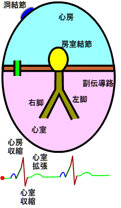
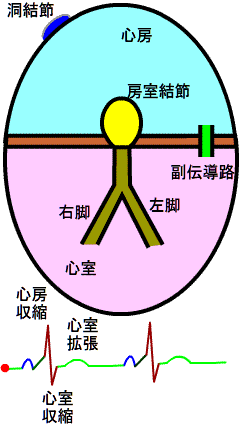

Sinus rhythm WPW syndrome Delta waves by accessory pathway location Premature ventricular contractions
Tachycardia in WPW syndrome (AVRT) AV nodal reentrant tachycardia (AVNRT) Intra-atrial reentrant tachycardia (IART) / atrial flutter (AFL) Download
WPW syndrome with a right-sided pathway (large delta wave) and with a left-sided pathway (small delta wave)

